Séance automnale
Accompagnée de Julien, l'automne s'est révélé entre ombre, lumière et caractère.
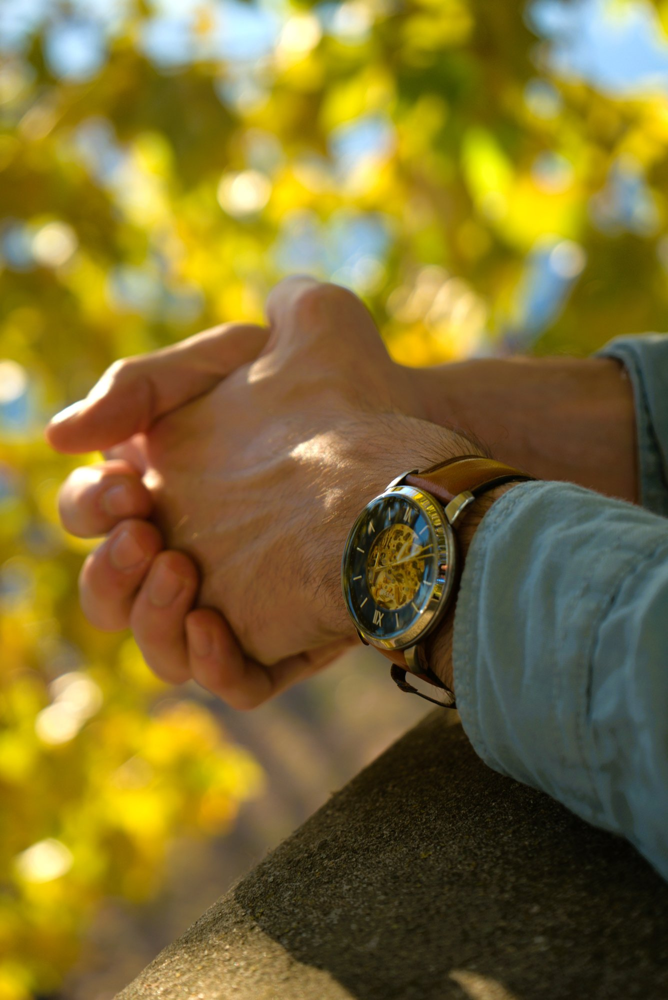
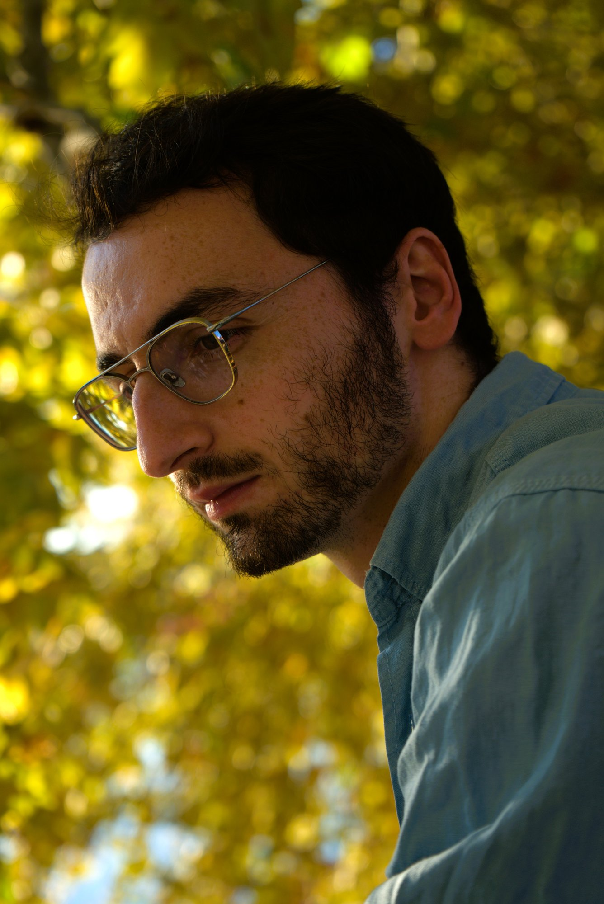
Récit du vivant
Ophélie Malorey
Portraits, quotidien, paysages, Voyage, le sens, la vie.
COLLABORONS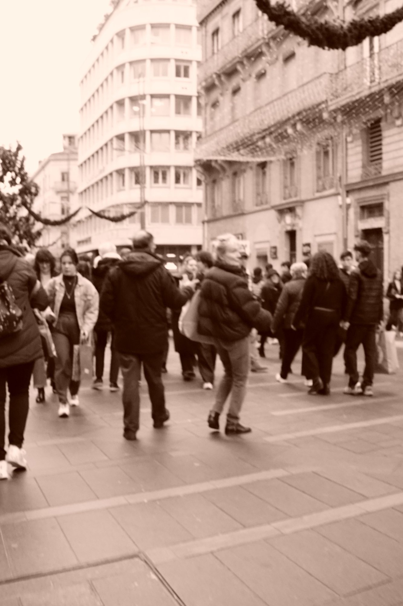
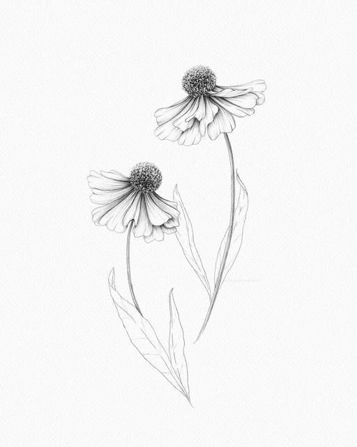
Récit du vivant
Mon travail est en perpetuelle évolution, à l'image de la vie qui m'inspire. Je photographie avant tout ce qui me touche, sans toujours tout comprendre sur l'instant. Le sens vient après, dans le silence, lorsque l'image commence à raconter son histoire. A travers des portraits, des scenes de vie, je cherche à saisir l'humain, l'essentiel, le vivant, ce qui existe, simplement.
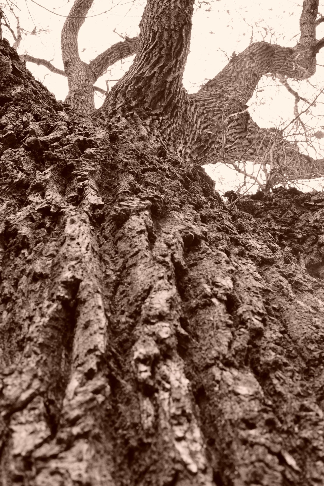
Chaque détail compte
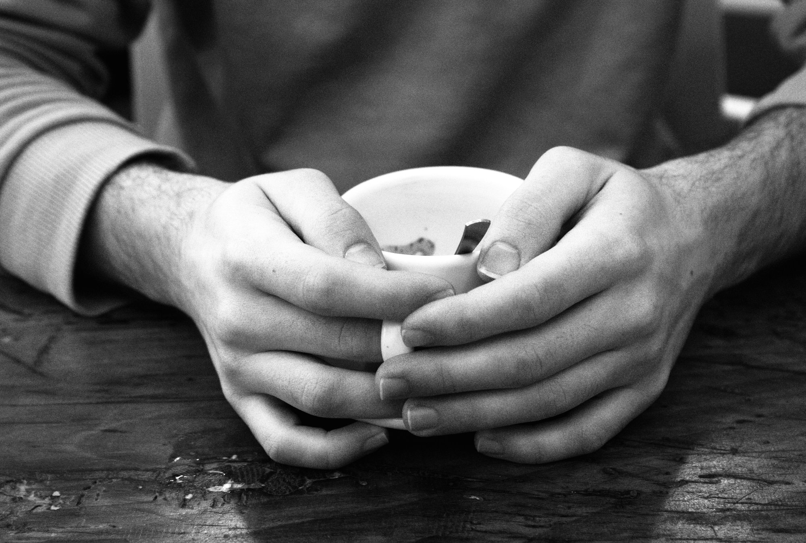
Accompagnée de Julien, l'automne s'est révélé entre ombre, lumière et caractère.


Accompagnée de Julia, son authenticité et son sourire ont suspendu le temps.
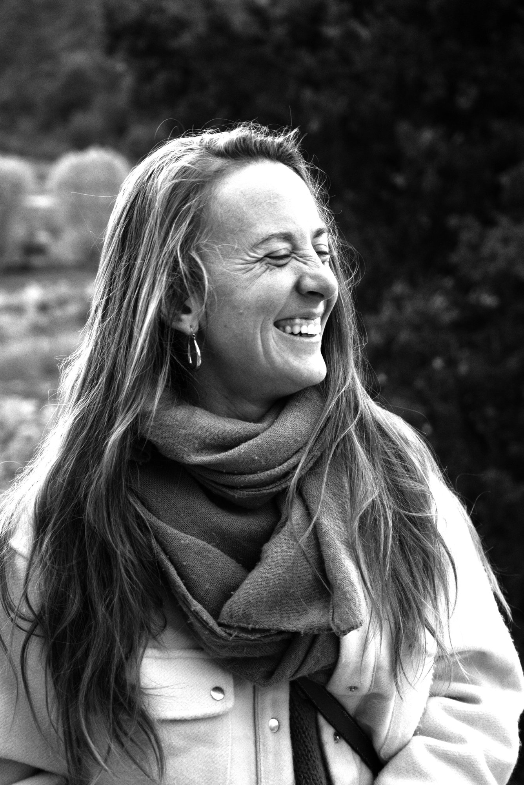
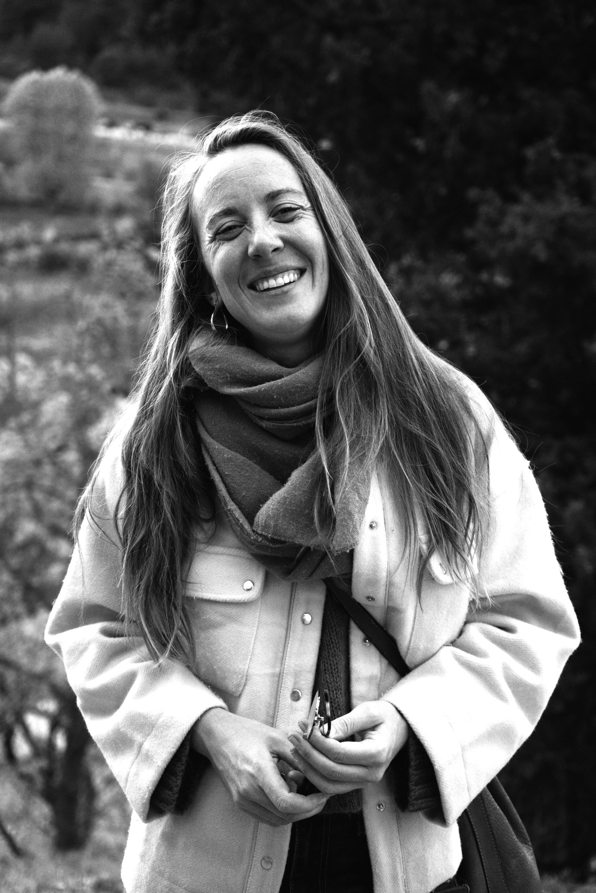
Accompagnée de Timea, modèle ou actrice de cinéma, j'hésite... douceur, simplicité, un vrai retour dans l'ancien temps.
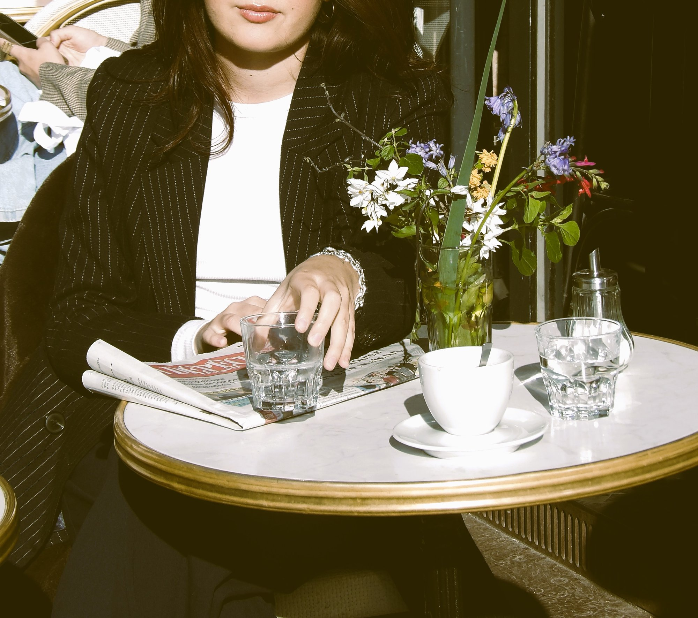
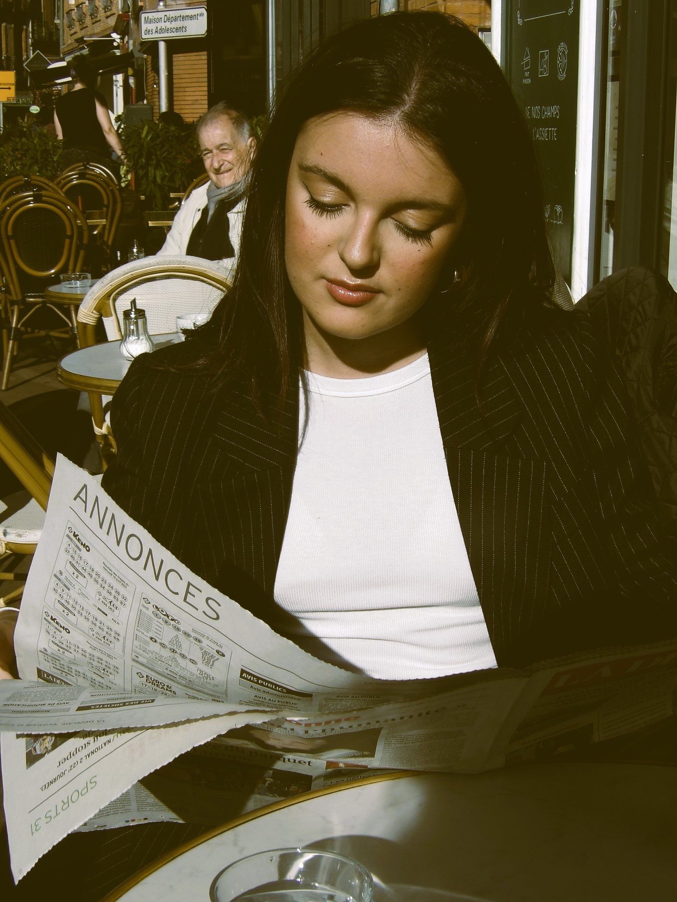
Ouverte aux projets sensibles et originaux.
Si l'idée te traverse, écris-moi.
Les commandes sont ouvertes !
CONTACTEZ-MOIN'hésitez pas à me contacter
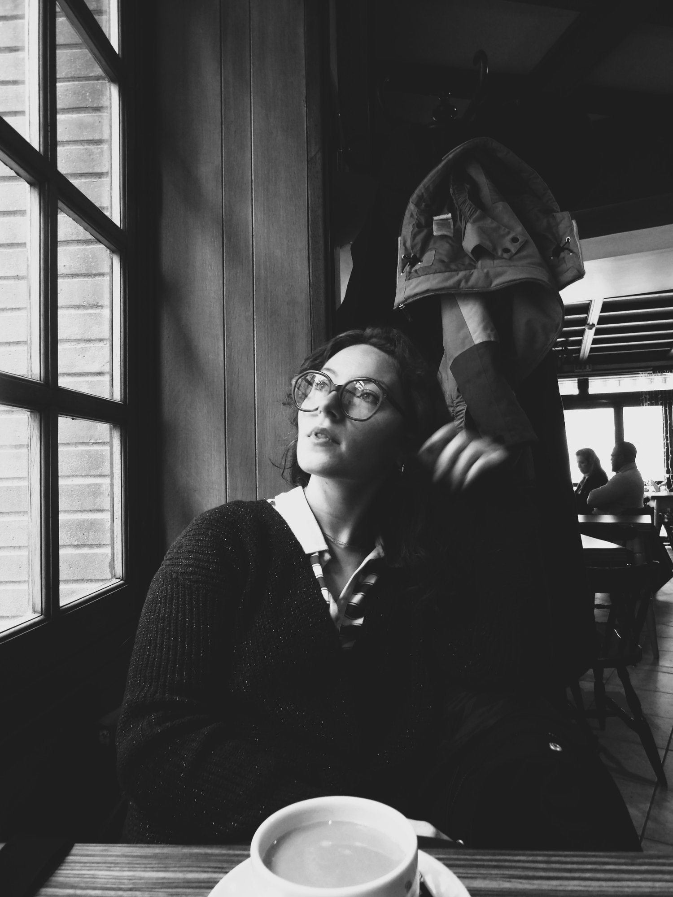
Ce qu'ils en disent
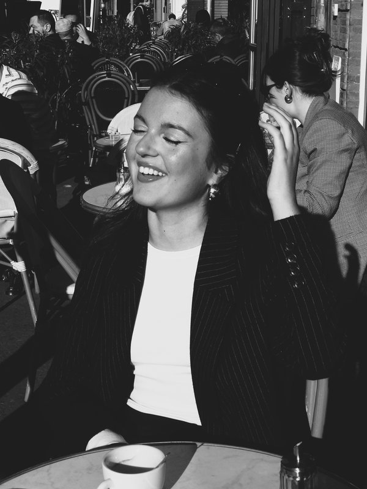
Mon expérience avec Ophélie était parfaite ! Très à l'écoute, elle a su me mettre à l'aise dès le début du shooting, en s'adaptant à mes demandes. Elle dégage une vraie douceur, qui donne envie d'être soi et d'oser. Je ne peux que vous la recommander !
Timea
Modèle
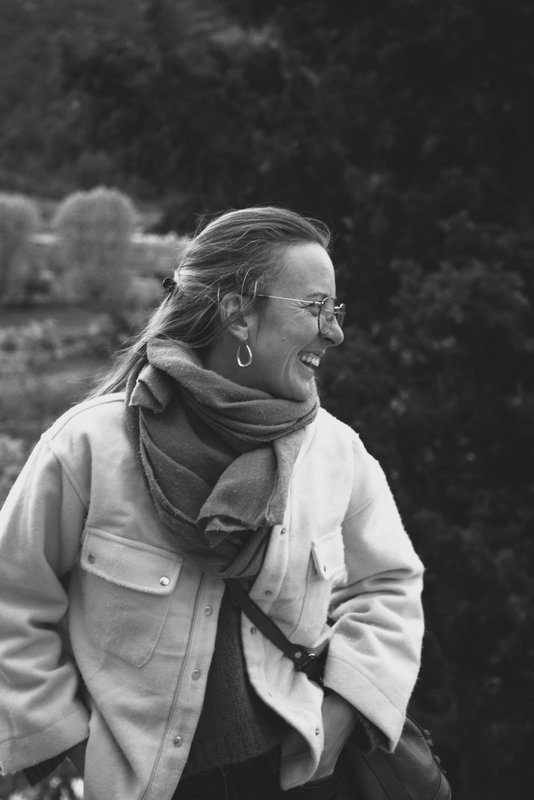
Ophélie est d'une grande et belle sensibilité. Son regard de photographe plein de joie, douceur et poésie m'a dessuite mise à l'aise pour notre shooting. Elle a su capter des aspects de moi et les mettre en lumière avec délicatesse et pudeur, dans un environnement qui me ressemblait... C'était une première pour moi, et une expérience enrichissante. Je dirais même thérapeutique! Merci beaucoup !
Julia
Cliente mariage
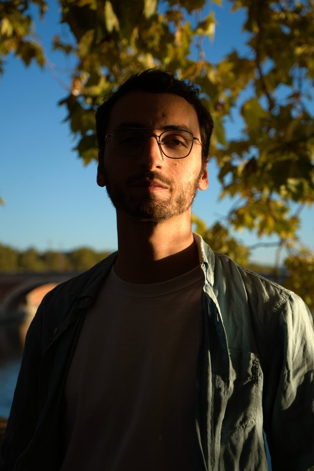
Ophélie et moi avons collaboré une fois pour un projet personnel et c'était ma meilleure expérience.
Julien
Mannequin
Tout savoir avant de réserver
Ophélie est basée à Toulouse. Elle shoote dans le Lot et partout ailleurs, dès lors que le lieu est accessible en train.
Des portraits, des scènes de vie, des paysages et de la photographie de voyage, avec une approche sensible qui cherche à saisir l'humain et l'essentiel.
Oui. Elle est ouverte aux projets sensibles et originaux, mariages compris, avec un regard documentaire attaché aux émotions et aux instants vrais.
Chaque projet étant unique, les tarifs sont établis sur devis selon le type de séance, sa durée et le lieu. Contactez Ophélie pour un devis personnalisé.
Par e-mail à o.lilimalorey@gmail.com ou par téléphone au 06 72 07 76 98.